1. Introduction
ONTbarcoder is a desktop application for demultiplexing and consensus barcode reconstruction from Oxford Nanopore Technologies (ONT) reads tagged with dual DNA barcodes (tags). It turns a raw FASTQ file and a demultiplexing sheet into validated, specimen-level barcode sequences — with no command line required.
Version 3.x preserves the algorithmic logic of ONTbarcoder 2.0 (Srivathsan et al., 2024) while adding a redesigned graphical interface, deterministic multiprocessing, a real-time (live sequencing) mode, a non-coding marker mode, and a set of integrated utilities (FASTA comparison, FASTA tools, a FASTQ inspector, an NCBI BLAST client — live search or parsing an already-downloaded result file — a best-sequence selector that merges several runs, and a BOLD Formatter that restyles BOLD identification exports to match the BLAST report look).
This manual targets researchers already familiar with amplicon sequencing and DNA barcoding. It documents every parameter, each pipeline phase, and all output files.
Key concepts used throughout
- Tag — the short oligonucleotide index (a.k.a. barcode index) appended to each primer to identify a specimen. Each specimen is defined by a unique forward tag + reverse tag combination.
- Barcode — the final consensus sequence reconstructed for a specimen (e.g. the 658 bp COI fragment).
- Coverage — the number of reads used to build a consensus for a specimen.
- QC-compliant barcode — a barcode with no ambiguities (N) and no estimated indel errors; the highest-confidence output category.
2. Installation & requirements
2.1 Packaged Windows build (recommended for end users)
The application is distributed as a self-contained folder built with PyInstaller (onedir). No Python installation is required.
- Unzip the distribution archive.
- Keep the folder layout intact —
ONTbarcoder3.exemust remain next to the_internalfolder and the_mafftfilesfolder. - Double-click
ONTbarcoder3.exe.
C:\Program Files\
or any read-only directory — unzip it to the Desktop, Documents, or another folder where
your user account has write permission. This is the single most common cause of failures.
Bundled components
_mafftfiles/— the alignment engine (disttbfast.exe, a MAFFT component), its parameter file (parfile) and substitution matrix (_aamtx). Required for all consensus phases.icon.ico— application icon._profiles/— created automatically on first run to store parameter profiles and tool configuration.
2.2 Running from source
For development or non-Windows platforms, run ONTbarcoder3.py with Python
3.10+ and the following dependencies:
# core dependencies pip install PyQt5 biopython edlib xlsxwriter openpyxl # the _mafftfiles/ folder must sit at the project root (next to ONTbarcoder3.py) python ONTbarcoder3.py
| Dependency | Purpose |
|---|---|
| PyQt5 | Graphical interface |
| biopython | Translation / genetic-code validation (Bio.Seq) |
| edlib | Fast pairwise sequence alignment (demultiplexing & comparison) |
| xlsxwriter | Excel report generation (runsummary.xlsx, BLAST/Compare reports) |
| openpyxl | Reading/writing .xlsx files (FASTA Tools "Append info to headers
from .xlsx", BLAST report styling, BOLD Formatter) |
2.3 Versions & updates
Versions follow MAJOR.MINOR.PATCH (e.g. 3.5.0): MAJOR changes may break
compatibility with saved profiles, .cfg files or outputs; MINOR adds features;
PATCH contains fixes and small adjustments. Every published change raises at least the PATCH
number, so two copies with the same version are always identical. The installed version is
shown in the top bar and in About.
A few seconds after start-up ONTbarcoder checks GitHub for a newer release (in the
background; nothing is sent besides the request itself, and no connection simply means no
notice). Only releases that include the package for your system count (_win.zip on
Windows, _linux.tar.gz on Linux), so a release published for one system first does not
notify the other until its package is uploaded. When one exists, a dialog offers
Download v… (the browser downloads that package directly; unzip it and keep your own
_profiles and _notes), a link to the release page, Skip this
version or Remind me later; untick Check for updates at start-up to turn the check off.
About → Check for updates checks on demand and turns the automatic check back on.
3. Workflow overview
The left sidebar of the application has two tabs: Workflow (the analysis pipeline) and Utilities (standalone tools). The tab follows whichever panel is open, and every item carries a monochrome icon that changes colour with its state. The Dark/Light button in the top bar switches the colour theme; the choice is remembered between sessions. The mouse wheel scrolls the page and never changes a value: numeric fields, drop-down lists and sliders ignore it, so scrolling past a parameter cannot edit it by accident (use the keyboard, the field's arrows or a click instead). A typical run moves through the workflow panels in order:
The sidebar numbers these required steps (1 Input files → 2 Parameters → 3 Analysis → 4 Results) and marks each completed one with a green ✓. Steps that are not yet available are greyed out; hovering one explains why (load the FASTQ and the demultiplexing file first). Parameter Sweep and RT Charts are unnumbered: the first is optional and the second only appears in Real-Time mode. Utility panels with long explanations keep them in a collapsed ℹ How it works link, one click away.
Internally the barcode-building pipeline runs in up to four phases:
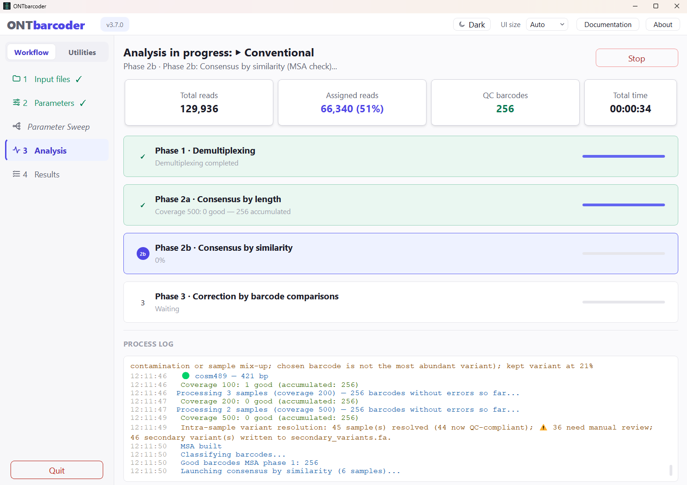
4. Input files
4.1 FASTQ file (reads)
A single basecalled FASTQ file (.fastq, uncompressed) containing all reads
of the run. In conventional mode you supply the complete file; in real-time
mode the program watches a folder where new FASTQ files appear during sequencing.
4.2 Demultiplexing file (CSV)
A comma-separated file (.csv or .txt), one row per
specimen, with no header row. Columns:
sample, tag_f, tag_r, primer_f, primer_r [, primer_f2, primer_r2, ...] [, gencode]
| Column | Content |
|---|---|
sample | Unique specimen identifier (becomes the barcode name). |
tag_f | Forward tag (index) sequence. All tags must be the same length. |
tag_r | Reverse tag (index) sequence. |
primer_f | Forward primer sequence (IUPAC ambiguity codes allowed). |
primer_r | Reverse primer sequence (IUPAC ambiguity codes allowed). |
primer_f2, primer_r2, … |
Optional. Additional primer pairs for primer-cocktail designs. Add them as further pairs of columns. |
gencode |
Optional trailing column: a per-specimen NCBI genetic-code table number (0–33). Lets a single run mix specimens that use different genetic codes. See the note below and §6.1. |
Example with one primer pair:
BEE001,AACGTGAT,AAACATCG,GGTCAACAAATCATAAAGATATTGG,TAAACTTCAGGGTGACCAAAAAATCA BEE002,AAACATCG,AACGTGAT,GGTCAACAAATCATAAAGATATTGG,TAAACTTCAGGGTGACCAAAAAATCA
Example with a two-primer cocktail (extra columns):
SPID01,AACGTGAT,AAACATCG,PRIMER_F1,PRIMER_R1,PRIMER_F2,PRIMER_R2
Example with a per-specimen genetic code (trailing column):
BEE001,AACGTGAT,AAACATCG,GGTCAACAAATCATAAAGATATTGG,TAAACTTCAGGGTGACCAAAAAATCA,5 BEE002,AAACATCG,AACGTGAT,GGTCAACAAATCATAAAGATATTGG,TAAACTTCAGGGTGACCAAAAAATCA,1
(columns − 3) / 2, after excluding a trailing genetic-code
column if present). Use this to confirm the file parsed as expected. The file is read as
UTF-8 (with or without BOM, e.g. Excel's "CSV UTF-8"); ANSI files saved by Excel on Windows
are read as cp1252, so names with accents or ñ are kept intact. Blank lines and
spaces around values are ignored and tags are upper-cased. A row that has a sample name but
fewer than three columns stops the analysis with a message giving its line number.
tag_f. Keep all tags the same
length, and make sure tags differ by enough edits — the demultiplexer tolerates tag errors
by generating a mutant lookup table (substitutions, insertions and deletions up to 2 edits).
5. Analysis modes
Choose the mode at the top of the Input files panel.
5.1 Conventional default
For a completed sequencing run. You provide one complete FASTQ file plus the demultiplexing CSV. The full pipeline runs once.
5.2 Real-Time
For analysis during sequencing. The program processes FASTQ files as they are generated and updates provisional barcodes cycle by cycle, so you can monitor how many specimens have been recovered and stop the run once coverage is sufficient. A live chart panel (RT Charts) appears in this mode.
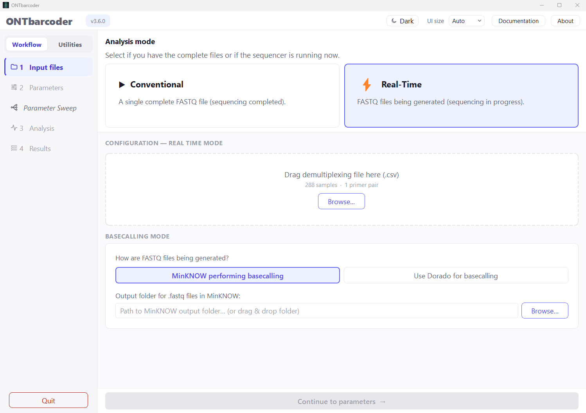
Real-time mode requires choosing how FASTQ files are produced:
| Basecalling mode | What you provide |
|---|---|
| MinKNOW performing basecalling | The MinKNOW output folder where .fastq files are written. ONTbarcoder
watches this folder. (run mode 2) |
| Use Dorado for basecalling | The path to the Dorado executable, a model (sup@latest,
hac@latest or fast@latest), and the input folder
containing POD5/FAST5 signal files. ONTbarcoder drives Dorado to emit FASTQ.
(run mode 3) |
nvidia-smi).
If none is found, the analysis is aborted immediately with
"Dorado requires an NVIDIA GPU with CUDA. Analysis aborted." If your machine has no
GPU, basecall with MinKNOW or a separate Dorado install first, then use the
MinKNOW performing basecalling option instead.
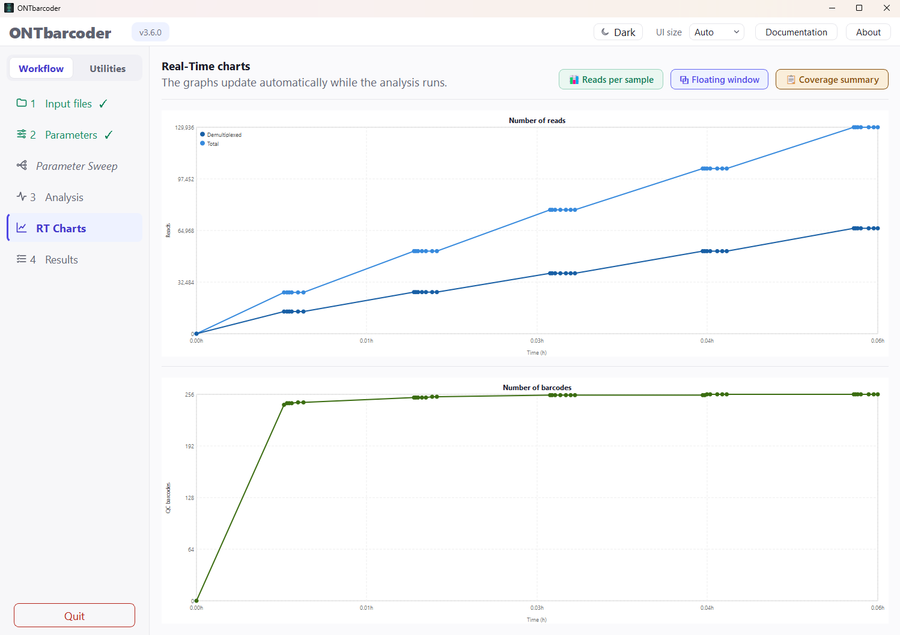
Three buttons in the RT Charts header show or hide extra views; each button reads Hide … while its view is open and switches back when the view is closed, including with a floating window's Close button or its title-bar X:
| Button | Shows |
|---|---|
| 📊 Reads per sample | Floating window with the reads assigned to each sample, largest first. |
| ⧉ Floating window | The two charts in a separate, resizable window. |
| 📋 Coverage summary | Inline summary of every sample of the CSV in three groups, using the Minimum read coverage of the run (e.g. with 5): samples with 0 reads · samples with 1–4 reads · samples with ≥ 5 reads, each with its percentage. It gives an early idea of how many barcodes the run can produce. Updated every cycle and reset to 0 when a new run starts. |
6. Parameters reference
The Parameters panel groups settings into four tabs. Defaults are tuned for the 658 bp COI barcode. Every value below shows its default and valid range.
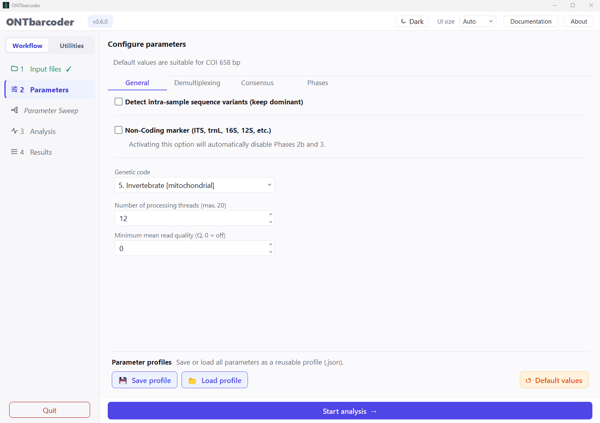
6.1 General tab
Intra-sample variant detection
Placed above the Non-coding block because it applies to both coding and non-coding markers. Off by default.
| Parameter | Default | Range | Description |
|---|---|---|---|
| Detect intra-sample sequence variants (keep dominant) | Off | — | When a specimen's reads carry more than one co-abundant template (cross-
contamination, index hopping, a paralog/NUMT, or a real heterozygous/allelic
variant), cluster the reads into haplotypes automatically and keep the
consensus of the dominant (most abundant) one as the barcode, instead of
a single majority call that can flip unpredictably with the parameters.
Secondary haplotypes are written to secondary_variants.fa and
reported in the Intra-sample variants sheet of
runsummary.xlsx (see §8.1). In coding-marker
mode the cleanly-translating haplotype is preferred (this discards NUMTs); in
non-coding mode the dominant one is used regardless. |
| Min. secondary variant fraction (%) | 20 | 10 … 50 | Minimum proportion of a secondary haplotype for it to count as a real variant (and for the sample to be flagged as mixed). Below this the minority is treated as noise and the ordinary consensus is kept. Values below ~10% approach the ONT error floor and risk false positives. This value also caps how many variants can be reported at once — see Tuning for specimens with many variants. |
| Variant tolerance (% of diagnostic sites) | 10 | 0 … 40 | Maximum percentage of the polymorphic (diagnostic) sites at which two reads of the same haplotype may disagree — due to sequencing error — before they are split into separate variant clusters. Lower = stricter (more clusters); higher = lumps more reads together. Applied as a percentage of the sites found, so its effect grows with the number of variants present — see Tuning for specimens with many variants. |
Mixture triage — how a flagged sample is interpreted
Finding two haplotypes is not the same as finding a contamination. Three built-in rules separate a real, actionable mixture from ordinary within-species variation and from noise:
| Rule | Threshold | What it means |
|---|---|---|
| Dominant↔secondary divergence | ≥ 3% → NEEDS REVIEW | The genetic distance between the kept (dominant) haplotype and each secondary
one is computed per cluster (IUPAC-aware). At or above 3% the two templates are
at heterospecific level — a cross-contamination or sample-mix candidate — and the
sample is flagged for review with an explicit reason. Below 3% the mixture is
conspecific and stays informational: the identification is the same either way.
The value is reported in the run log, in the FASTA headers as
div=…%, and in the report sheet. |
| Anti-hotspot guard | ≥ 2 linked polymorphic columns and ≥ 3 reads per secondary cluster |
A mixture is only declared when at least two polymorphic columns vary together, and each secondary cluster holds at least 3 reads. This rejects single-SNP splits, which at ONT error rates are indistinguishable from an error hotspot or from heteroplasmy — and which would not change the identification anyway. |
| Bimodal read length | second length mode ≥ 30 bp away holding ≥ 20% of reads | Advisory 🟠 warning computed on all demultiplexed reads of a sample before the by-length subsampling — which would otherwise hide a contaminant of a different length from the haplotype resolver entirely. Listed in the run log and as its own row in the variants sheet. |
Tuning for specimens with many variants
The defaults (20% / 10%) are calibrated for the common case: one dominant template plus one contaminant, NUMT or allele. A specimen expected to carry several co-abundant variants — pooled or bulk material, gut contents, multi-copy nuclear markers, deliberately mixed libraries — needs both knobs re-tuned, because both scale with the number of variants actually present.
1. The detection ceiling is set by the minimum fraction
A cluster is only promoted to a real variant when it holds at least Min. secondary variant fraction of the reads. That puts a hard ceiling on how many variants can ever be reported at once:
| Min. secondary variant fraction | Max. variants detectable in one specimen |
|---|---|
| 20% default | 5 |
| 15% | 6 |
| 10% (GUI minimum) | 10 |
Lowering this value also lowers the per-column polymorphism threshold that finds the
diagnostic sites in the first place (it is derived as
min(20%, min. secondary fraction) and never set above it), so a variant at the
chosen fraction always remains detectable.
2. Tolerance is relative, so it grows with the number of variants
Variant tolerance is applied as a percentage of the polymorphic sites found:
allowed mismatches = tolerance × number of diagnostic sites. More variants
means more diagnostic sites, so the same 10% buys progressively more slack:
| Diagnostic sites found | Mismatches allowed at 10% | Mismatches allowed at 5% |
|---|---|---|
| 8 | 1 | 0 |
| 20 | 2 | 1 |
| 40 | 4 | 2 |
With 40 diagnostic sites the default merges any two variants separated by 4 sites or fewer — exactly the closely-related haplotypes you are trying to separate. Drop the tolerance to 5% as a starting point for multi-variant specimens.
3. Coverage has to support the fraction
Variant calling runs on the sub-sampled read set of each coverage value in the
Coverage list (§6.3), and a cluster additionally needs ≥ 3 reads in absolute
terms, not just the right percentage. At a 25-read subset, a 10% variant is 2.5 reads
and is invisible by construction. Include high values in the coverage list — e.g.
50, 100, 200, 400 — so the resolver has enough reads to work with. As a rule of
thumb, aim for at least 30 / fraction reads per specimen: ~300 reads to call
10% variants reliably.
4. Built-in caps you cannot reach from the GUI
| Cap | Value | Effect |
|---|---|---|
| Variants recovered per specimen | 3 | Only the 3 most abundant secondary variants are re-processed (2a re-consensus +
Phase 3) and added to secondary_variants.fa as type=corrected
records. The rest are still written there as type=raw only, and the
count left out is reported in the Variants beyond cap (not recovered)
column of the variants sheet. |
| Ambiguities per secondary variant | < 5 Ns | A secondary consensus with 5 or more Ns is dropped from
secondary_variants.fa and from recovery, to keep the file
informative. A corrected version that ends up with more than 10 Ns (deletions
are filled with N) is discarded; its type=raw record is kept. |
| Linked polymorphic columns | ≥ 2 | Single-SNP variants are never reported (anti-hotspot guard, above). |
| Reads per cluster | ≥ 3 | Absolute floor, applied on top of the percentage. |
5. Suggested starting point
# specimens expected to carry many co-abundant variants
Detect intra-sample sequence variants ON
Min. secondary variant fraction (%) 10
Variant tolerance (%) 5
Coverage list 50, 100, 200, 400
6. Reading the result back and correcting course
Use the Intra-sample variants sheet of runsummary.xlsx
(§8.1) to check whether the settings landed:
| Symptom in the sheet | Diagnosis | Fix |
|---|---|---|
| #noise reads is high and #variants is low | Tolerance too strict: one true haplotype fragmented into many small clusters, each of which then fell below the minimum fraction. | Raise tolerance back towards 8–10%. |
| Few variants but large Divergence vs dominant values | Tolerance too loose: distinct haplotypes lumped into one cluster. | Lower tolerance to 3–5%. |
| Variants beyond cap (not recovered) > 0 | More eligible variants than the recovery cap of 3. | The sequences are still in secondary_variants.fa; use those, or run
them through FASTA Compare separately. |
| Sample not flagged mixed at all, despite expectation | Detection ceiling, or coverage below 3 / fraction reads. |
Lower the fraction to 10% and raise the coverage list. |
div=…% field in the secondary_variants.fa headers. In coding
markers a divergence under ~1% combined with translates=no is far more likely
to be residual error, heteroplasmy or a NUMT than a real variant.
Non-coding / genetic code / performance
| Parameter | Default | Range | Description |
|---|---|---|---|
| Non-coding marker | Off | — | Switch to non-coding markers (ITS, rbcL, matK…). Disables translation validation and phases 2b & 3. See §7. |
| Genetic code | 5 — Invertebrate mitochondrial | 19 NCBI codes | Translation table used to validate coding-marker barcodes (no internal stop codons, correct length). Disabled in Non-coding mode. Overridden per specimen if the demultiplexing CSV carries a trailing genetic-code column — see §4.2. |
| Number of processing threads | = physical cores | 1 … logical CPUs | Parallel workers. The analysis is internally capped at the number of physical cores; higher values oversubscribe the CPU and run slower. See §18. |
| Minimum mean read quality (Q, 0 = off) | 0 | 0 … 50 | Discards input reads whose mean quality is below this Q value before
demultiplexing. Mean read quality is computed the ONT/NanoPlot way
(-10·log10(mean per-base error probability)), not a plain average
of per-base Q scores. Requires FASTQ input with quality strings. |
6.2 Demultiplexing tab
| Parameter | Default | Range | Description |
|---|---|---|---|
| Minimum length (bp) | 658 | 0 … 5000 | Reads at or below this length are discarded before demultiplexing. The field is tinted soft-red while it is 0 ("unset") — e.g. right after enabling Non-coding mode, where the length is marker-specific and must be entered manually. |
| Barcode length (bp) | 658 | 0 … 5000 | Expected length of the final barcode (the amplicon target length). Same "unset" red-tint behavior as above. |
| Window of barcode length ± (bp) | 100 | 0 … 500 | Tolerance window used to classify reads as single-product vs. double-product (two ligated barcodes) and to split the latter. |
| Window for primer search (bp) | 100 | 10 … 500 | Number of terminal bases scanned at each read end when searching for the primer (and the adjacent tag). |
| Primer mismatches allowed | 10 | 0 … 30 | Maximum edit distance tolerated when matching a primer (IUPAC-aware). |
| Tag mismatches allowed | 2 | 0 … 5 | Maximum tag errors tolerated. A mutant lookup table (substitutions, insertions, deletions) is pre-built up to this many edits. |
6.3 Consensus tab
Main consensus calling
| Parameter | Default (Coding) | Range | Description |
|---|---|---|---|
| Main consensus calling frequency | 0.30 | 0.05 … 0.95 | Per-column frequency threshold: a base is called when its frequency exceeds this
value; otherwise the column becomes N. (Non-coding default: 0.40.) |
| Range of frequencies to assess (min, max) | 0.2, 0.5 |
0–1 | If the main-frequency consensus fails validation, the program sweeps thresholds in
this range to find a single valid consensus. (Non-coding: 0.3, 0.5.) |
| Range step | 0.05 | 0.01 … 0.5 | Step size for the threshold sweep above. |
| QC length tolerance ± (bp) Coding only | 0 exact length | 0 … 300 (step 3) | A consensus is accepted when its length is within ± this many bp of
Barcode length. 0 keeps the classic exact-length rule —
correct for COI, whose 658 bp are invariant. Raise it for coding markers with
genuine length variation between taxa (rbcL, matK); real coding-length variation
comes in multiples of 3. Disabled in Non-coding mode, where length is not
enforced at all. |
log.txt and to the HTML report.
Consensus by length (Phase 2a)
| Parameter | Default (Coding) | Description |
|---|---|---|
| Coverage for phase 2a | 25, 50, 100, 200 |
Comma-separated list of coverage levels tried iteratively. For each level the
program subsets that many reads per specimen and attempts a valid consensus. Use
↕ Reverse order to flip the sequence. (Non-coding default:
1500, 1000, 500, 200, 100, 50, 25, descending.) |
| Maximum read length deviation from barcode length (bp) | 50 | Reads whose length deviates from Barcode length by more than this are excluded from the length-based consensus. |
| Minimum read coverage | 5 | Specimens with fewer demultiplexed reads than this are skipped before any consensus attempt (range 1 … 5000). |
Consensus by similarity (Phase 2b)
| Parameter | Default | Range | Description |
|---|---|---|---|
| Coverage phase 2b | 100 | 1 … 5000 | Number of closest reads (by similarity to the provisional reference) used to build the rescue consensus. Disabled in Non-coding mode. |
6.4 Phases tab
Enable or disable individual pipeline phases. All are on by default.
| Phase | Notes |
|---|---|
| Phase 1: Demultiplexing | Always active in real-time mode (cannot be unchecked). |
| Phase 2a: Consensus by length | Core consensus step. |
| Phase 2b: Consensus by similarity (MSA) | Automatically disabled in Non-coding mode. |
| Phase 3: Correction by barcode comparisons | Automatically disabled in Non-coding mode. |
7. Non-coding marker mode
Enable Non-coding marker (General tab) for non-coding markers such as ITS, rbcL, matK, 16S, etc. This changes the acceptance logic:
- No translation validation. The genetic-code check is skipped (it would be meaningless for non-coding loci). Internally the genetic code is set to 0, which activates a dedicated path that validates a barcode only by correct length and absence of ambiguities.
- Acceptance criterion: a barcode is "resolved" when it matches the expected
length and contains no N. Barcodes with Ns go to the next (lower) coverage
level, and finally to
Remaining. - Phases 2b and 3 are disabled automatically (they require translation validation), and the phase-2b coverage field is locked.
- Coverage list defaults to descending (
1500 → 25): for variable markers, lower sub-sampling can yield a clean (0-N) consensus.
Phase 1 — Demultiplexing
Phase 1 assigns each read to a specimen.
- Length filtering & product classification. The FASTQ is read in a single
streaming pass. Reads ≤ Minimum length are dropped. Remaining reads are
classified by length:
- Single product (length below the single-product window): one barcode.
- Double product (length within the double window): two ligated barcodes — the read is split into two halves at the computed cut/overlap points, each processed independently.
- Reads outside both windows are counted as wrong-length and excluded.
- Tag mutant table. A lookup table of all tag variants up to 2 edits (substitution / insertion / deletion) is generated, with conflicting variants removed, so that tags carrying sequencing errors still resolve to the correct specimen.
- Primer & tag location. For each read, every forward primer in the design is aligned (IUPAC-aware, edlib, semi-global) within the primer-search window, on both orientations (the reverse complement is computed on demand). The best-scoring orientation fixes the read direction; the adjacent bases yield the forward tag. The reverse primer is then located at the other end to extract the reverse tag and the clean inter-primer region. When several primer pairs are present, the lowest total distance wins, so each read is written exactly once.
- Assignment. The (forward tag, reverse tag) pair is mapped through the mutant table to a specimen, and the cleaned read is appended to that specimen's read set.
Phase 2a — Consensus by length
For each specimen and each coverage level in the Coverage for phase 2a list:
- Reads within Maximum read length deviation of the target length are selected and sub-sampled to the coverage level (sorted by closeness to the target length, with deterministic tie-breaking).
- The sub-sample is aligned (MAFFT / disttbfast) and a consensus is called at the Main consensus calling frequency.
- Validation. Coding: the consensus must have the expected length, zero Ns, and translate without internal stop codons in the chosen genetic code. Non-coding: expected length and zero Ns.
- If the main-frequency consensus fails, thresholds across the assess-range are swept; if exactly one valid consensus emerges, it is accepted.
- Specimens that remain unresolved advance to the next coverage level. In ascending (Coding) mode the best result so far (fewest Ns) is kept.
Phase 2b — Consensus by similarity Coding only
Specimens not resolved by length are rescued by similarity: the provisional (predicted-error) barcode becomes a reference, reads within ~10% edit distance of it are collected, the closest Coverage phase 2b reads are retained, re-aligned and a new consensus is called and re-validated. An MSA check then classifies the rescued barcodes.
Phase 3 — Correction by barcode comparison Coding only
Residual barcodes still carrying errors are compared against the set of validated
barcodes. For each, the 20 closest references are aligned; positions are compared to the
consensus to estimate and remove indel errors (estgaps). The number of fixed
errors determines the output category (1–5, 6–10, 11–15, >15 errors).
8. Results & output files
By default, results are written to an output/ folder next to the executable
(you are prompted to confirm/choose the location). The key results live in
Main_barcode_results/.
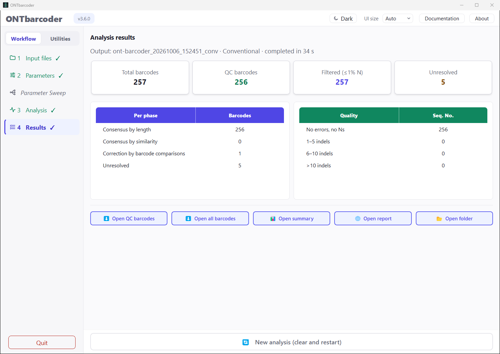
Folder suffix: _conv conventional run · _rt real-time cycle · _rt-final real-time wrap-up
| ├── Main_barcode_results/ | |
| │ ├── QC_Compliant_barcodes_noamb_noerr.fa | 0 Ns and 0 indels — best quality |
| │ ├── Filtered_barcodes_1percamb_upto5err.fa | ≤1% ambiguities, ≤5 indels |
| │ ├── Allbarcodes.fa | every barcode produced |
| │ ├── Fixed_barcodes_1to5err.fa | 1–5 indels fixed (phase 3) |
| │ ├── Fixed_barcodes_6to10err.fa | 6–10 indels fixed (phase 3) |
| │ ├── Fixed_barcodes_11to15err.fa | 11–15 indels fixed (phase 3) |
| │ ├── Fixed_barcodes_16to20err.fa | 16–20 indels fixed (phase 3) |
| │ ├── Remaining.fa | unresolved specimens |
| │ └── QC_Compliant/ Filtered/ 1to5errors/ … | per-category subfolders |
| ├── secondary_variants.fa | minority haplotypes from mixed samples (if enabled, §6.1) |
| ├── runsummary.xlsx | full report (see §8.1) |
| ├── barcodesets/ | intermediate consensus sets |
| ├── 2a_ConsensusByLength.zip | |
| ├── 2b_ConsensusBySimilarity.zip | |
| └── 3_ConsensusByBarcodeComparison.zip |
div=…%). Each variant is written as-is (type=raw) and, when
phase-3 recovery corrected it, followed by its corrected version (type=corrected,
with coverage, fixed_indels and Ns) under the same
{sample}_var{i} name, so both can be compared and either one rescued.
Output categories explained
| File | Inclusion rule |
|---|---|
QC_Compliant_barcodes_noamb_noerr.fa |
Ambiguities = 0 and estimated indels = 0. Use this set for high-confidence downstream analyses. |
Filtered_barcodes_1percamb_upto5err.fa |
Ambiguities ≤ 1% of barcode length and indels ≤ 5. |
Fixed_barcodes_*err.fa |
Barcodes whose indels were corrected in Phase 3, binned by number of fixes. |
Allbarcodes.fa | Union of all barcodes produced. |
Remaining.fa |
Specimens for which no acceptable barcode could be built. |
FASTA headers encode metadata, e.g.
>SPID01_all.fa;658;142;ambs=0;estgaps=0 →
specimen;length;coverage;ambiguities;estimated indels.
8.1 runsummary.xlsx
A multi-sheet Excel report is generated at the run root:
| Sheet | Contents |
|---|---|
| 1. Demultiplexing | Reads per specimen after demultiplexing — every
specimen of the CSV, including those with 0 reads or below Minimum read
coverage (their barcode columns in sheets 2a/2b show NA). |
| 2a Consensus by length | Per-specimen length, barcode and translation/length check from Phase 2a. |
| 2b Consensus by similarity | Coverage, length, barcode and translation check from Phase 2b (Coding runs). |
| 3.Final barcodes | Final per-specimen barcode, stage, type (e.g. "removed N indels"), length, ambiguities and validation flag. |
| Sample QC status | One row per specimen of the CSV: reads demultiplexed, whether a barcode was produced, a color-coded status (green/amber/red), length, number of Ns and number of indels. Status values: QC-compliant, Filtered (within accepted errors), Exceeds accepted errors, No barcode (unresolved), Below minimum read coverage (<N) and No reads (not demultiplexed). A quick per-sample health check across the whole run, also written when a Real-Time run is stopped by the user. |
| Intra-sample variants | Only present when Detect intra-sample sequence variants (§6.1) is enabled and finds mixed samples. Per haplotype cluster: sample, read count, fraction of the sample's reads, length, Ns, whether it translates cleanly (coding markers), its role (dominant / secondary), Divergence vs dominant (%) and Identical to N other barcodes (see the triage rules in §6.1), plus samples flagged "needs review" or with more variants than the recovery cap, and advisory rows for samples with a bimodal read-length distribution. |
| Final results / RT Timeline | Run metrics — Total samples (every specimen of the CSV), Samples with
≥ N reads (N = the run's Minimum read coverage), barcode counts and
total time (e.g. 3 h 43 min 1 s) — and, in real-time runs, a
timeline of recovered barcodes per cycle. |
The HTML report (report.html) summarizes the same run; its Breakdown by
coverage — Phase 2a table counts every barcode resolved at each coverage level,
accumulated over all Real-Time cycles.
9. Parameter profiles
At the bottom of the Parameters panel you can persist your full configuration:
- 💾 Save profile — write all parameters (including Non-coding state and phase
selection) to a
.jsonfile. - 📂 Load profile — restore parameters from a saved
.json. - ↺ Default values — reset everything to the Coding defaults.
Profiles are stored by default in the _profiles/ folder. Sharing a profile
file is the simplest way to reproduce a colleague's exact settings.
10. Utility — FASTA Compare
Compares barcode FASTA files to assess concordance — e.g. between runs, pipelines, or against a curated reference.
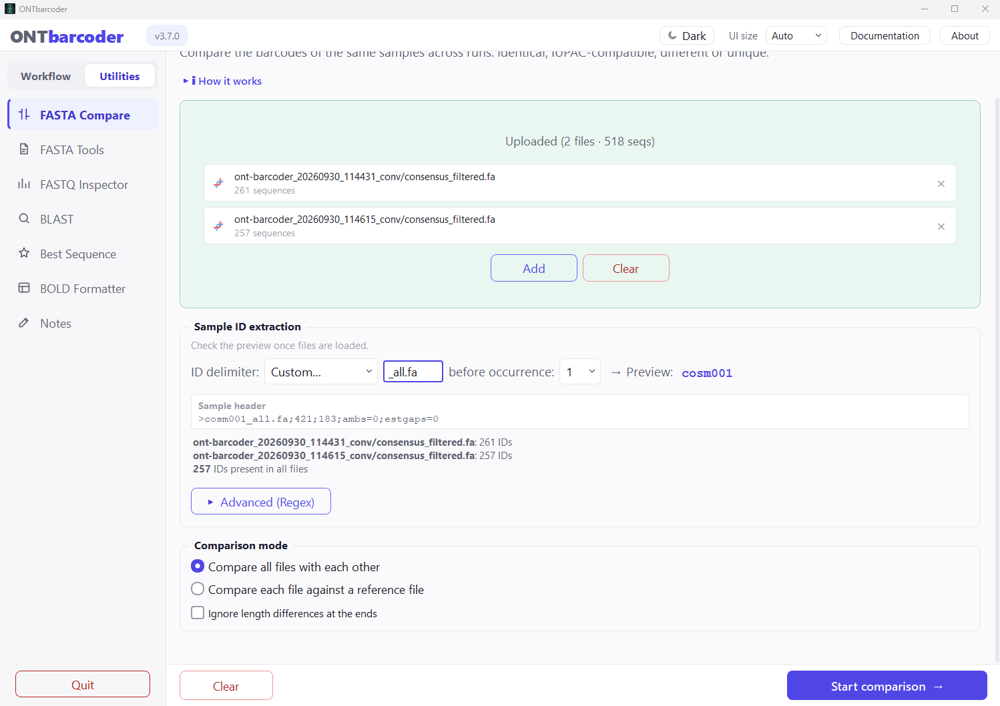
- All-vs-all: load N files; every shared specimen ID is compared across all pairs.
- Versus a reference: compare N files against one chosen reference file.
For each specimen, sequences are aligned (edlib, global) and classified as:
| State | Meaning |
|---|---|
| Identical | Character-for-character equal. |
| Compatible (IUPAC) | Equal once IUPAC ambiguity codes are treated as matches — against a base or
against another code sharing a base (e.g. N/R,
R/D); the count of ambiguous positions is reported. |
| Different | Incompatible; the edit distance is reported. |
| Only in reference | (Versus-a-reference mode.) The ID exists in the reference file but in none of the compared files. |
| No reference | (Versus-a-reference mode.) The opposite case: the ID exists in a compared file but is absent from the reference file itself. |
Reverse-complement matches are detected and flagged [RC]. Outputs include a
colour-coded summary.xlsx plus per-category FASTA files
(identical.fa, compatible_iupac.fa, different.fa,
only_in_reference.fa, without_reference.fa,
best_barcodes.fa). When sequences differ, the "best" barcode is chosen by
fewest ambiguities → fewest gaps → highest coverage. Ambiguities and length are taken from
the header (ambs=, second field); when a header lacks them — e.g. phase-2a
consensus_N_barcodes.fa files or FASTA from other tools — they are counted in
the sequence itself. If an output cannot be written (typically summary.xlsx
open in Excel), a warning lists the affected files; close them and run the comparison
again.
Load the files first: the Sample ID extraction settings sit below the file area and preview the ID extracted from a real header of the loaded files.
An output folder picked with Change… is used as is; only without one does the panel
ask where to save. If the ID extraction maps two records of the same file to one ID, the one
with the best quality is kept and the summary line warns (Repeated IDs merged, with
the count per file; also in the Repeated_IDs column of the Runs sheet) —
usually a sign that the extraction pattern is too broad. A file that cannot be read stops
the comparison with an explicit message instead of passing for an empty one. Each distinct
pair of sequences is aligned only once per ID, so comparing dozens of runs that mostly agree
(e.g. a Parameter Sweep) stays fast.
Reading the summary with many files
With more than two or three files, a full file path in every column header — and every
pairwise result spelled out in the Note column — becomes unreadable. Compare
keeps the ID short by giving each file a one-letter alias instead:
- Each compared file gets a single letter —
A,B,C… — in the order it was loaded; the reference file (versus-a-reference mode) is alwaysREF. Column headers use the alias (A_len,A_cov…), andsummary.xlsxmerges a band above them naming the run (A · 103536, with the full path as a cell comment) so the full name is one hover away, not repeated in every column. - A new Runs sheet in
summary.xlsxlists the alias, the distinctive fragment of the file name, its role (run/reference), the file name, and the sequence count — the legend for every alias used in the report. The on-screen results window shows the same mapping as chips above the table (a grid that scrolls past three rows when there are many runs). - In all-vs-all mode, files that carry the exact same sequence for a specimen are
collapsed into a variant group, numbered
1,2,3… — deliberately numbers, never letters, so a group label is never mistaken for one of the (lettered) files it lists. Two columns summarize this:Vars(how many distinct sequences were found for that ID) andPattern(one group number per file, in file order,.when the file lacks that ID — e.g.123114means files 1, 4 and 5 agree, while 2, 3 and 6 each hold their own variant). - The
Notecolumn reports group membership and the distances between groups instead of every pairwise result:1=A-D | 2=E | 3=F || 1-2 d=34, 1-3 d=43, 2-3 d=15 || Best F (ambs=1, gaps=0, cov=22). Consecutive files compress to a range (A-D); a non-contiguous group lists its members (1=A,D,E). Versus-a-reference mode groups files by their verdict against the reference instead:= REF: A-C || ≠ REF d=34: D || Best E (…).
Specimen ID extraction
Compare needs a consistent specimen ID to match records across files; headers rarely agree on format, so the panel offers two ways to derive one:
- Delimiter mode (default). Choose an ID delimiter (
;by default — matching ONTbarcoder's own FASTA headers, e.g.>Cnt1_all.fa;745;22;ambs=2;estgaps=0— plus_,|, space,.,-, or a custom one) and which occurrence to split before (1st … 5th) — this generalizes the old "split at_all.fa" behavior. An "any of these" checkbox treats the delimiter string as a set of individual characters rather than a literal substring. - Advanced (Regex) mode. Supply one or more regex patterns, tried in order
until one matches the header. Optional ID normalization can lowercase IDs, strip
leading zeros, or strip a further regex from the extracted ID — useful when the
same specimen is written
BEE001in one file andbee_001in another.
11. Utility — FASTA Tools
Batch operations on one or many FASTA files. Optionally merge files before processing to treat them as a single dataset, or process each file individually.
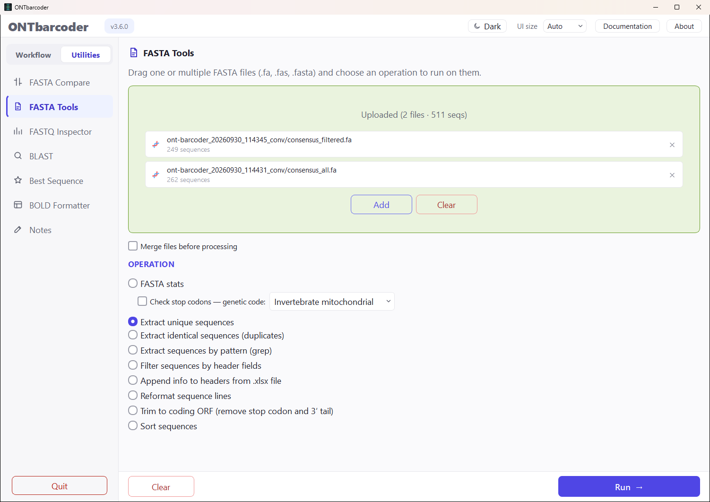
| Operation | Description |
|---|---|
| FASTA stats (default) | Descriptive statistics saved as <name>_stats.xlsx (one per file,
or a single one with Merge files); a short summary is also printed in the
panel log. Sheets:
-, .) are counted but excluded from the length, so
aligned files report real sequence lengths.Check stop codons (optional, off by default — leave it off for non-coding markers or files mixing markers): choose the genetic code (Standard, Vertebrate mitochondrial, Invertebrate mitochondrial or Plant plastid, e.g. for rbcL / matK). All six reading frames (forward and reverse complement) are scanned codon by codon, terminal codon included, and the frame with the fewest stops is reported (Best frame +1…+3 / −1…−3, number of stops and their nucleotide positions on the forward sequence). An ambiguous codon counts as a stop only when every IUPAC reading is a stop (e.g. TAR). Stop codons in a coding barcode (COI,
rbcL, matK) point to pseudogenes (NUMTs), indel errors or a wrong marker.
The invertebrate mitochondrial code (stops TAA, TAG) is a subset of the
vertebrate one (TAA, TAG, AGA, AGG), so it is the conservative choice for files
mixing vertebrates and invertebrates. |
| Extract unique sequences | Collapse duplicate sequences to a single representative. |
| Extract identical sequences (duplicates) | Output the sequences that occur more than once, plus a
_duplicate_groups.xlsx grouping IDs by shared sequence. |
| Extract by pattern (grep) | Keep sequences whose headers match a
pattern; the pattern can be typed directly, loaded from a file (one pattern per
line), and optionally treated as a regex. By default a pattern is searched as text
anywhere in the header, so DNS-1 also selects DNS-10,
DNS-11…; for a list of IDs turn on Match whole ID (switched on
automatically when patterns are loaded from a file), which compares each pattern
with the sequence ID taken as described below. |
| Filter sequences by header fields | Split headers by a separator and add one or more field-based criteria (by
field index, using =, !=, >,
<, >=, <=, contains
or not contains) to keep only matching records. |
| Append info to headers from .xlsx | Enrich headers with metadata from a spreadsheet (.xlsx): column 1 =
sequence ID, columns 2+ = fields appended to the header with the chosen
separator. The ID is taken from each header as described below. |
| Reformat sequence lines | Rewrap sequence lines (e.g. single-line vs. wrapped FASTA). |
| Trim to coding ORF | Trims each barcode to its longest clean open reading frame (all six frames),
removing the gene's stop codon and the non-coding 3′ tail — the same logic as
coding-marker mode. Choose the Genetic code and the Min. ORF
coverage (default 95 %). A sequence that already translates cleanly is
left unchanged (e.g. Folmer COI); one whose clean ORF covers less than the
minimum is left intact and listed in the log (possible NUMT / pseudogene,
unusual length or wrong genetic code), so nothing is silently cut. A length
field in ONTbarcoder headers (>id;LEN;…) is updated. Writes
<name>_orf.fasta. Typical use: bring full-length non-coding
barcodes (e.g. CytB 1 062 bp with stop) to the coding region produced in
coding mode (1 032 bp) before comparing them in Compare. |
| Sort sequences | Reorder records by a chosen field. |
| Split FASTA file | Split each file (or the merged set) into several FASTA files, written to a
<name>_split folder. Every sequence goes to exactly one file
and sequences are never cut. Four ways:
By number of sequences — files of N sequences
(<name>_part01.fasta, _part02…; the last may hold
fewer), e.g. batches for BLAST on the NCBI website;
Into a number of files — N files of near-equal size;
By total length — consecutive files of at most N bases
(1 000 000 is NCBI's limit per blastn query; a single longer sequence
gets a file of its own);
By header field — one file per distinct value of a header field, named
after it (e.g. one file per sample or species). Unlike Extract or
Filter, which write one file with the sequences matching a value you
type, this needs no values and leaves no sequence out: headers without the
field go to <name>_no_field.fasta. |
Matching sequence IDs (Append info · Match whole ID)
Both operations need the ID of each sequence: the header text before the first separator chosen in ID = header text before first:
;(default) — for headers made of fields such as ONTbarcoder's>DNS-1_all.fa;758;807→DNS-1_all.fa.- space — e.g.
>DNS-1 some text→DNS-1. Works for any FASTA whose ID is the first word. |or a custom separator for other field layouts.- Remove suffix (optional) — removed from the end of the ID.
For ONTbarcoder's own headers, >DNS-1_all.fa;758;807;ambs=0 becomes
DNS-1 with Text before first ; plus suffix
_all.fa. A live preview under the setting shows the ID taken from the first
header and how many sequences of the loaded files match the spreadsheet (Append) or the
pattern list (grep), so a wrong rule shows up before running. In Append, IDs and cell values
are normalized (spaces, dots and commas → _, accents removed), and the log lists
a few IDs that were not found.
12. Utility — FASTQ Inspector
Drag one or several FASTQ files, or a whole folder, to get a full descriptive quality
report (.fastq, .fq, .fastq.gz, .fq.gz;
Browse files… allows multiple selection and Browse folder… picks a folder).
Folders are searched recursively, so an ONT fastq_pass/ with its
barcode01/, barcode02/… sub-folders can be dropped as is; all
files are analysed together. All reads are analysed; only the scatter plot uses a
random sample of 10,000 points for responsiveness. Once the input is chosen it collapses to
a single row (Change… to pick another), the progress bar shows the percentage of
input read (also for gzip), and Stop cancels the analysis while keeping the input
loaded.
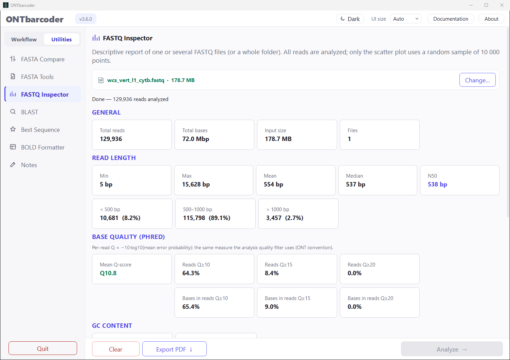
Reported metrics include: read count, total bases, input size and number of files,
mean / median / min / max length, N50, length distribution buckets (<500, 500–1000,
>1000 bp), mean quality, the fraction of reads at Q≥10/15/20 and the fraction of
bases carried by those reads (the usable yield an equivalent quality filter would
keep), mean and standard deviation of GC%, and histograms for length, quality and GC.
Several files are read in parallel across CPU cores (one file per process; a large
uncompressed file is also split into byte ranges), which matters for an ONT
fastq_pass/ made of hundreds of small .fastq.gz; a single file or a
small input is read in one thread.
Truncated or damaged files. A .fastq.gz that ends early — typically
one MinKNOW is still writing — no longer stops the analysis: the reads before the damage are
used, the other files are analysed normally, and the status line turns amber naming the
file(s) (hover for the full list). Files that disappeared between selection and analysis are
skipped the same way, and the file count and size cards show what was actually read.
−10·log10(mean error probability) of its bases — the ONT
convention, and exactly how the analysis Minimum mean read quality filter (§6.1)
scores reads. So the Q≥N percentages predict what that filter keeps. It is lower than the
plain average of the Phred values, which barely moves when a few bases are very poor.
Breakdown by group
When the input holds two or more groups, a sortable table lists per group: files, reads, % of reads, bases, mean length, mean Q and reads Q≥10. Groups are the first-level sub-folders of a dropped folder (files directly inside it form a (folder root) group), or each dropped file/folder when several are dropped together. It shows at a glance which barcode under-performed. The PDF export includes the same table.
13. Utility — BLAST
The BLAST utility has two tabs, for the two ways of getting NCBI hits into ONTbarcoder: submit sequences directly to NCBI (BLAST API Search), or parse a Hit Table already downloaded from the BLAST website (BLAST web results) — useful when NCBI has throttled this IP's search traffic, since it does not submit a new search. Both tabs write the same kind of results table and offer the same optional query-taxonomy reference file (§13.3), but only one of the two can run at a time (§13.2).
13.1 BLAST API Search
Submit barcode FASTA files to NCBI BLAST (remote URL API) for taxonomic identification.
Sequences are merged, normalized and split into batches; each batch is submitted, polled
and its hits written incrementally to a timestamped .tsv (and an
.xlsx). The sequences that were queried are saved alongside them as
blast-<ts>.fa.
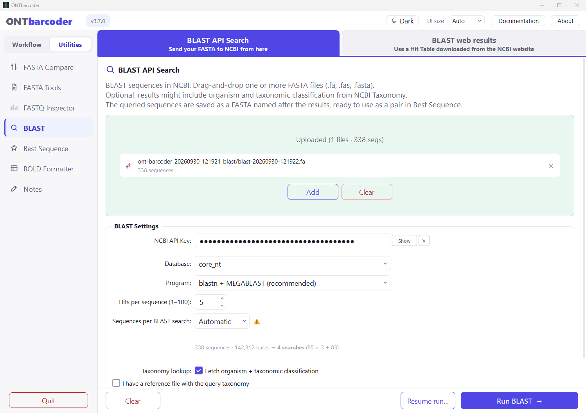
- Configurable: BLAST program (
blastn + MEGABLAST— recommended,blastn, ormegablast), target database (core_nt,nt,refseq_rna,16S_ribosomal_RNA), number of hits per sequence, how the run is split into batches (see below), and whether to fetch full taxonomy (Kingdom → Genus + organism). - Taxonomy and accession lookups are cached on disk (
taxadb.dbx,accdb.dbx) and reused across runs in sibling result folders, minimizing repeated network calls. - If the output file is locked (e.g. open in Excel) the writer retries; if it cannot create the file at all, the run aborts cleanly rather than wasting network queries.
- The run also writes
blast-<ts>.fawith the sequences submitted, in the normalized single-line form actually sent to NCBI — so its headers are exactly theQuery_namevalues of the results table. It is written before the first query, so it survives a run stopped half way. - Sequences that were queried but returned no hit are collected in
nohit_seqs_<ts>.fa, ready to be re-run against another database. Sequences of batches that failed or were never processed go instead tomissing_seqs_<ts>.fa— including a batch whose search finished but whose results could not be downloaded (the log gives its RID), so a network failure is never reported as "no hit". Both counts, and the names of the no-match queries, are recorded inblast_run_log_<ts>.txt. The missing sequences do not need to be re-run by hand: Resume run… finishes them into the same table (see Stopping and resuming a run below).
Batch size — Automatic and Manual
Every batch is submitted to NCBI as one BLAST search, so the way the run is split decides how much of your NCBI quota it spends. Three limits matter, and the third is not one most users expect:
| Limit | Value | Counted against |
|---|---|---|
| Length of a single query | 1,000,000 bases (blastn) |
The search — NCBI rejects anything longer, with an explicit error. |
| Searches in 24 h | 100 | Your IP address. Beyond it NCBI moves your traffic to a slower queue and, in extreme cases, blocks it. |
| CPU time per search (undocumented) | Not published by NCBI — in practice, far below 1,000,000 bases | The search itself, silently: NCBI answers with no RID and no error text the panel
can show, which just looks like "no response". A heavy program+database
combination (blastn + MEGABLAST against core_nt) hits
this far sooner than the base-length limit above. |
The searches-per-day penalty counts searches, not sequences, so a larger batch is
still lighter on that quota. But in practice, testing a real run against core_nt
with MEGABLAST showed batches of 500 and even 250 sequences silently rejected by the
undocumented CPU-time limit, while 100 sequences per search worked reliably — so
that is the ceiling Automatic mode uses, well under the base-length or daily-searches limits.
On a busy public queue even 100-sequence searches can take most of the waiting time, which is
why Manual's own default is half that (50). A second API key does not lift either NCBI limit:
it applies to the IP, not the account.
The Sequences per BLAST search row therefore offers two modes:
- Automatic (default) — the program reads the loaded FASTA files and picks the size that uses the fewest searches, then spreads the sequences evenly over them so the last batch is not a remainder of two or three. It respects both the 1,000,000-base ceiling (a margin below it, for encoding overhead) and a cap of 100 sequences per search, so that one failure never costs the whole run. There is no number to set, so the box is hidden; the plan line below states the result.
- Manual — the number box appears and you set it yourself, from 1 to 1000.
It starts from the value Automatic had computed for the loaded files (50 when no file
is loaded yet), so you adjust from a sensible figure rather than from scratch. Raising it well above 100 risks the
undocumented CPU-time rejection above, especially against
core_nt.
In both modes a line under the row shows the resulting plan before you run anything, for
example 516 sequences · 429,647 bases → 6 searches of ~86 sequences.
In Manual it also warns when the chosen value wastes quota («Automatic would use 1
instead») or exceeds the 100-searches-per-day limit outright — a
separate number from the 100-sequences-per-batch default above. The preview and the run share
the same splitting code, so what is shown is what is submitted.
If NCBI still rejects a batch outright (no RID, or a failed search status), the panel halves it and retries automatically — down to 20 sequences or three halvings, whichever comes first — instead of losing the whole batch. Each retry is logged together with NCBI's own reason when it gives one, so a rejection reads as a specific cause rather than a plain "no response".
Waiting for results
A BLAST job is a queued search, not a request that fails after N retries: how long it takes
depends on NCBI's load and on whether your IP is in the slow queue. The panel waits up to
45 minutes per search, checking its status once per minute (the NCBI minimum per
search) and backing off to every 2 minutes for long jobs; any two requests to the BLAST
server are at least 10 s apart, as NCBI's URL API guidelines ask. Only the search status
is downloaded while waiting, not the full result page. A short batch therefore takes at least
about a minute. Stop takes effect within about 30 s even in the middle of a network
request. If the budget runs
out, the log reports the RID (the search can still be retrieved by hand at
blast.ncbi.nlm.nih.gov, where it is usually still running) and the batch is
submitted again as two smaller searches, as for a rejected batch above; only a batch that
cannot be split further goes to missing_seqs_<ts>.fa. A search can also stay
in NCBI's queue indefinitely: rather than waiting the whole budget, you can press Stop
and then Resume run…, which submits that batch again as a new search.
Stopping and resuming a run
Each run keeps a small state file, blast-<ts>.state.json, next to its
.fa and .tsv. It is updated after every batch with the sequences
already answered (including those with no hit, which leave no row in the table) and the run's
parameters. A stopped run — or one that finished with sequences in
missing_seqs_<ts>.fa — can therefore be finished later without
handling FASTA files or merging tables by hand:
- Press Resume run… (next to Run BLAST) and pick the run's
blast-<ts>.state.json. After a run stopped in this session the dialog opens on it already; this file is the only one to select. - Only the sequences not yet in the table are searched, always as new searches (new RIDs): a search the stopped run left waiting at NCBI is never reused, since a RID can stay queued indefinitely and is often the reason the run was stopped.
- Their hits are appended to the same
.tsv. At the end the.xlsx, the query-taxonomy columns and Tax_level_match (§13.3),nohit_seqsand the run log are rebuilt for the whole run, andmissing_seqsis deleted once nothing is left. The result is one table, as if the run had never been interrupted; a run can be stopped and resumed any number of times.
The run keeps its own database, program, taxonomy option and query-taxonomy reference file, whatever the panel shows, so every row of the table is comparable — the reference file does not need to be loaded again. The API key is taken from the panel. Two settings may change between sessions: Hits per sequence and Sequences per BLAST search (Manual mode). When the panel's values differ from the run's, a dialog lists the differences and asks which to use (Keep the run's is the default, since after a restart the panel may simply show its defaults); the change is logged and saved for later sessions. More hits apply only to the sequences searched from then on.
blast-20260908-210439.fa + .xlsx), which is how
§14 pairs a run's sequences with its BLAST table. Running BLAST on
each parameter set therefore leaves the input for that utility ready, with no renaming.
When a search finishes, the Open in Best Sequence → button loads that FASTA and its
table as a pair in §14 and switches to it.
Remember that §14 additionally requires the Query_* taxonomy columns — tick
the reference-file option below (§13.3) and this tab writes them into the table itself, so it
already satisfies that requirement by the time it reaches Best Sequence.
13.2 BLAST web results
When NCBI has moved this IP to its slow queue (or you simply already ran the search on the
website), this tab gets the same kind of results table without submitting a new search: run
BLAST manually at blast.ncbi.nlm.nih.gov, then use Download All → Hit
Table(text) or Hit Table(csv) and drop the downloaded file here. Both export shapes
are accepted and auto-detected from the file content — the #-commented tabular
.txt and the headerless .csv — and more than one file can be
dropped at once to combine several jobs.
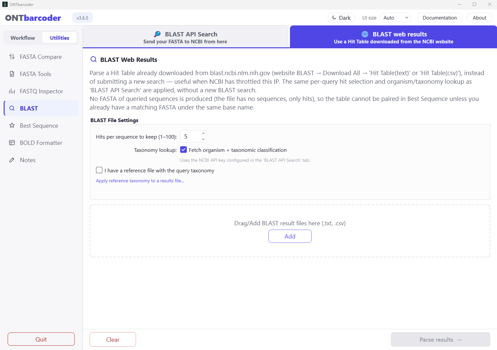
- Hits per sequence to keep caps how many of the file's hits are kept per query, the same idea as the "Hits per sequence" spin of BLAST API Search. If a query has fewer hits than that in the file, all of them are kept.
- Fetch organism + taxonomic classification uses the same NCBI E-utilities lookups
(and the same
accdb.dbx/taxadb.dbxcaches) as BLAST API Search, since the downloaded file only carries accession numbers, not organism names. E-utilities is a separate, low-volume NCBI service from the BLAST search queue this tab exists to avoid, so using it here does not add to the 100-searches-per-day count. - The tab writes
blastfile-<ts>.tsv/.xlsxand its ownblastfile_run_log_<ts>.txt. Unlike BLAST API Search, it produces no FASTA of queried sequences — the input file carries hits only, never sequences — so in Best Sequence (§14) drop it together with the FASTA that was searched: a single FASTA and a single table left without a name match are paired automatically. - Parse results is disabled again as soon as a run finishes or errors, and stays disabled — even if more files are dropped in the meantime — until Clear is pressed, so the same run cannot be launched a second time by accident.
13.3 Query taxonomy reference file (both tabs)
Both tabs offer the same optional
«I have a reference file with the query taxonomy» checkbox that Best
Sequence (§14.1) uses: tick it, drop a single reference table
(.csv, .xlsx or .tsv), and the four
Query_Order / Query_Family / Query_Genus /
Query_organism columns are written into the results table before it is converted
to .xlsx — keyed by the sample ID (the text before the first
; in the query name). The reference file format is exactly the one described in
§14.1: an identifier column followed immediately by four columns read, in that order, as
Order, Family, Genus and Organism.
Sample,Order,Family,Genus,Organism DNS-1343,Asterales,Asteraceae,Baccharis,Baccharis latifolia DNS-1400,Poales,Poaceae,Chusquea,Chusquea scandens
Filling these columns in directly from BLAST means the table already satisfies Best Sequence's own requirement (§14.1) with no further editing — the tip above (§13.1) relies on exactly this.
Below the reference file drop zone, Strip suffix from sample ID (default
_all.fa) is removed from that sample ID before the lookup, since consensus-building
pipelines commonly carry it as part of the query name:
DNS-1343_all.fa;758;807 → DNS-1343. Leave it blank if the query name's sample
ID already matches the reference file's identifier exactly. A match is tried on the ID as
typed first, then case-insensitively; a sample ID not found in the reference is left blank
rather than guessed, and is counted in the run's result message so mismatches are visible
immediately rather than discovered later as empty Query_* columns.
The Tax_level_match column
When a run has both sides of the taxonomy — hit taxonomy from "Fetch organism +
taxonomy" (Subject_Order/Family/Genus/organism)
and expected taxonomy from the reference file above (Query_Order/Family/
Genus/organism) — the table gains one more column at its right
end, Tax_level_match, recording the deepest rank at which the two agree:
organism, genus, family, order, or
none. This is the same rule Best Sequence's own Tax_level column
(§14.2) uses to judge a hit, so a BLAST table already shows whether a hit taxonomically
supports the sample without waiting for Best Sequence to run. If either side of the taxonomy
is missing, no column is added.
13.4 Fixing or adding query taxonomy after a run
The Apply reference taxonomy to a results file… link, under the checkbox in §13.3 on either tab, re-applies a reference file to an already-finished results table — without submitting a new BLAST search. It exists for the two situations that otherwise leave a finished table without query taxonomy even though a reference file exists: the reference wasn't ready yet when the search ran, or the match needed a Strip suffix that wasn't set at the time. Since a BLAST run can take a long time and counts against the daily searches limit (§13.1), re-running it just to fix these two columns is wasteful; this tool only repeats the local, offline matching step.
It opens a small dialog: drag or browse to the .tsv/.csv results
table to update, then the reference file and suffix exactly as in §13.3. Apply writes
the Query_* columns (and Tax_level_match, if the table already
carries hit taxonomy) into that file in place, and regenerates its matching
.xlsx — overwriting the previous one, so both files reflect the corrected
taxonomy. Running it more than once on the same table is safe: a rematch reuses the existing
Tax_level_match column instead of adding another one.
14. Utility — Best Sequence
When the same library is processed several times with different parameters, each run recovers a slightly different set of consensus sequences — and, for the samples recovered in more than one run, slightly different sequences. This utility merges those runs and keeps one best sequence per sample, using the BLAST hits of each candidate as the arbiter. Open it from Best Sequence in the sidebar, just below BLAST.
The panel works in two modes, decided by how many runs you drop into it:
| Input | Mode | What it does |
|---|---|---|
| Two or more FASTA + table pairs | Selection | Compares the runs and keeps the best sequence per sample, then classifies the
result. Decision says how each one was settled. |
| One FASTA + table pair | Classification | There is nothing to choose between, so every sequence is kept and the run is
simply split by taxonomic match: which sequences agree with the expected
taxonomy and which do not. Decision reads
single_run for every row. |
_identified / _no_tax_hit split, so you can pull out
the sequences with a taxonomic match — and spot the tax_mismatch ones — without
having to process the library twice.
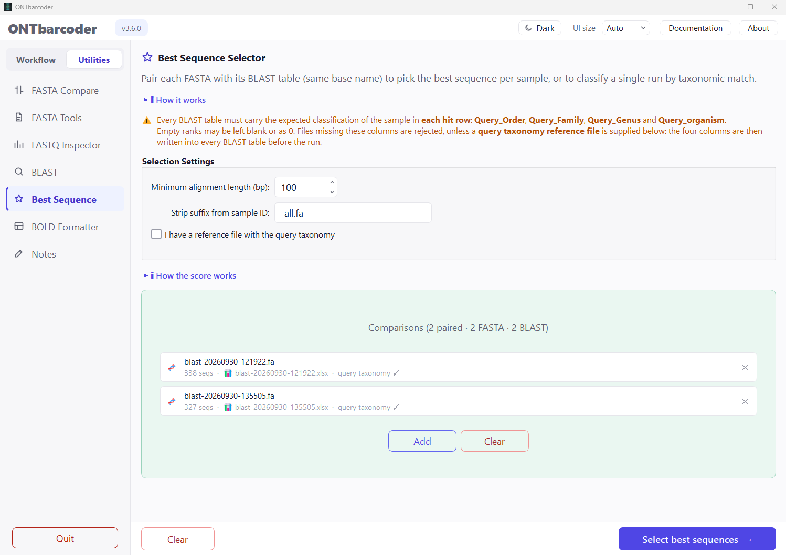
14.1 Input — one FASTA + one BLAST table per run
Drag every FASTA together with its BLAST table into the drop zone. Files are paired automatically by base file name, so each pair must share it:
run_strict.fa + run_strict.xlsx run_relaxed.fa + run_relaxed.xlsx run_permissive.fa + run_permissive.xlsx
The BLAST utility already writes each run as such a pair
(blast-<ts>.fa + blast-<ts>.xlsx), so its output
folders can be dropped here directly. When exactly one FASTA and one table are left
without a name match (e.g. a blastfile-<ts>.tsv from BLAST web
results), they are paired anyway; with more files, rename them to share a base name.
One pair is enough (classification mode); two or more enable the comparison, with no
upper limit. BLAST tables may be .xlsx, .tsv or .csv. Each row of the drop zone shows
the pair, its sequence count and whether the table passed validation; a FASTA with no
matching table (or a table with no matching FASTA) is listed in red and ignored.
Query_Order, Query_Family,
Query_Genus and Query_organism. The BLAST utility (§13) writes the
Subject_* taxonomy of each hit on its own, but the Query_* side is
your own collection/voucher data — add it by hand, or have either BLAST tab write it for you
from a reference file (§13.3), which produces a table that already satisfies this requirement.
Ranks you do not know may be left blank or as 0. Files missing any of these
columns are rejected in the drop zone, before the run starts — unless you supply the
reference file described below, which writes them for you.
Adding the columns automatically — taxonomy reference file
Preparing every table by hand is only reasonable for one run. Tick
«I have a reference file with the query taxonomy» in the settings and drop a
single reference table (.csv, .xlsx or .tsv): the four
Query_* columns are then written into every BLAST table of the run before
the comparison starts, from that one list.
- The identifier of the reference must be the same sample ID used to group the
sequences: the text before the first
;of the FASTA header with the suffix of the panel removed (DNS-1343_all.fa;758;807→DNS-1343). The identifier column is the first one named Sample, ID, Query_name, Code, Voucher…, and the first column of the file when none of those is present. - The four columns following it are read, in that order, as Order, Family, Genus and Organism — whatever their own headers say. Anything further to the right is ignored.
- Matching is exact first, then case-insensitive. A sample absent from the reference
gets empty ranks (it can then only be flagged
tax_mismatch), and every such sample is listed in the run log. - The tables are modified in place: existing
Query_*columns are overwritten with the reference values, and the missing ones are appended at the right end, leaving the rest of the table untouched. Close the tables in Excel before running — a locked file stops the run with a message instead of losing the change.
Sample,Order,Family,Genus,Organism DNS-1343,Asterales,Asteraceae,Baccharis,Baccharis latifolia DNS-1400,Poales,Poaceae,Chusquea,Chusquea scandens
Besides those four, the table must contain the usual BLAST columns written by §13:
Query_name (matched verbatim against the FASTA header), Hit_rank,
Alignment_length, Bit_score, P_identity,
Subject_accession.ver, and Subject_Order /
Subject_Family / Subject_Genus / Subject_organism.
Five hits per sequence is the usual input, but fewer is fine — and a sequence with no hits
at all is still handled. The Subject_* columns exist only when BLAST was run with
Fetch organism + taxonomy; a table without them is rejected with that explanation,
since every hit would otherwise count as a taxonomic mismatch. Numbers saved as text by
Excel (99.5%, 99,5) are read as numbers.
14.2 How the best sequence is chosen
Sequences are grouped by sample ID: the text before the first ; in
the header, minus the suffix configured in the panel (_all.fa by default), so
DNS-1343_all.fa;758;807;ambs=0;estgaps=0 → DNS-1343. Length,
reads, ambiguities and indels are read from the header; when a header has no
ambs= field (e.g. phase-2a consensus files) the ambiguities are counted in the
sequence, so the ambiguity penalty still applies. A header containing spaces is also
matched in the _ form the BLAST utility submits it with.
With a single run each sample has one candidate, so the steps below do not apply: the sequence is kept as it is and only its taxonomic level is computed. The scoring matters only when there is more than one candidate to compare.
- Identical sequences are taken as they are. If a sample's sequence is
byte-identical in every run where it appears, there is nothing to decide — it is
kept and flagged
identical_in_all_runs(oridentical_in_available_runswhen the sample is missing from some run). - The rest are scored with their BLAST hits. For each candidate the panel finds
the hit that matches the expected taxonomy at the deepest rank, and computes:
score = taxonomic bonus of that hit (species 400 · genus 300 · family 200 · order 100 · none 0) + bit-score weight × (its bit score ÷ best bit score of the sample) − penalty per ambiguity × ambs − penalty per estimated gap × estgapsThe bit score already combines percent identity and alignment length, so those are not weighted separately. Ties are broken by longer sequence, then more reads, then file name — the result is deterministic.
Because the rank bonuses are 100 points apart and the default bit-score weight is 100, taxonomic concordance always outranks raw alignment score: a shorter sequence whose best hit is the right genus beats a longer one whose best hit is an unrelated family.
Species level is granted only when both the expected and the hit organism name an
actual species: genus + epithet, compared on those two words (authors ignored), after
dropping the qualifiers cf., aff. and nr.. Open
nomenclature never counts as a species match — Palicourea sp. vs
Palicourea sp. ABC123, Palicourea cf. acuminata vs
Palicourea cf. guianensis, or a bare genus — those fall through to the genus
comparison. Palicourea cf. guianensis vs Palicourea guianensis is a
species match. The same rule computes Tax_level_match in BLAST (§13) and the
BOLD Formatter (§15).
14.3 Settings
The panel exposes only the two settings that depend on your data:
| Setting | Default | Description |
|---|---|---|
| Minimum alignment length (bp) | 100 | Hits shorter than this are discarded as spurious before scoring. Without this filter a 30 bp accidental match to an unrelated organism can drive the whole decision for a sample that has no real hit. The sensible value depends on your marker and reference database. |
| Strip suffix from sample ID | _all.fa |
Removed from the sample ID read out of the header. Clear it if your headers do not carry a suffix. |
Fixed scoring weights
The three weights of the formula are design constants, not settings, and are not
offered in the interface: their values only make sense relative to the 100-point gap
between taxonomic ranks, and raising them breaks the property the whole utility rests on —
that taxonomic concordance outranks raw alignment score. They live at the top of
_utilities/best_seq_panel.py and are written to every run log.
| Constant | Value | Rationale |
|---|---|---|
BITSCORE_WEIGHT | 100 | Matches the gap between ranks exactly, so the bit score can order candidates that reached the same rank but never promote one that reached a lower rank. |
AMB_PENALTY | 2 per ambs |
A tie-breaker. Within a sample the normalised bit scores of the candidates typically sit 1–5 points apart, so 2 points per ambiguity is the same order of magnitude: enough to separate two otherwise equivalent candidates, never enough to override taxonomy — that would take 50 ambiguities. |
GAP_PENALTY | 2 per estgaps |
Same reasoning, applied to estimated gaps. |
14.4 Outputs
Results go to a timestamped folder (output/ont-barcoder_<date>_bestseq/
by default, or a folder you pick):
| File | Content |
|---|---|
bestseq-<ts>_all.fasta |
The best sequence of every sample. |
bestseq-<ts>_identified.fasta |
Sequences whose best hit matched the expected taxonomy at some rank (species, genus, family or order). |
bestseq-<ts>_no_tax_hit.fasta |
Sequences whose hits matched no taxonomic rank — the ones that need manual review. |
bestseq-<ts>.tsv / .xlsx |
Decision report, one row per sample (see below). |
bestseq_run_log_<ts>.txt |
Input pairs, parameters, the scoring formula used, and counts per taxonomic level and per flag. |
_all.
_no_tax_hit like any other, and
must be reviewed. Use the Decision column of the report to tell those apart from the
samples that also disagreed between runs.
14.5 Reading the report
The report has one row per sample, laid out in four colour-coded zones.
| Zone | Columns | Answers |
|---|---|---|
| 1 · Identity | Sample, Decision, N_files,
Selected_file, Header |
Which sequence was kept, from which run, and how it was chosen. |
| 2 · Sequence | Length, Reads, Ambs, Estgaps |
How good the consensus itself is. |
| 3 · BLAST evidence | N_hits, N_hits_raw, Tax_level,
Query_Order/Family/Genus/organism,
Hit_Order/Family/Genus/organism, Best_hit_acc,
P_identity, Alignment_length, Bit_score |
What the expected taxonomy was, what BLAST actually found, and how strong that match is. |
| 4 · Decision | Score, Runner_up_file, Runner_up_score,
Flag |
How close the call was, and what deserves review. |
epidendrum_fimbriatum);
the comparison itself is case-insensitive.
The Query_* columns are read from the BLAST table independently of the
hits, so the expected taxonomy is still reported for a sample whose hits were all filtered
out. It can only be empty when the sample appears in no BLAST table at all, or when the
rank was left blank in the input.
Decision
| Value | Meaning |
|---|---|
single_run |
Only one run was supplied: nothing was compared, the sequence was kept and classified. |
identical_in_all_runs |
The sample came out byte-identical in every run: no decision was needed. |
identical_in_available_runs |
Identical wherever it appeared, but the sample is missing from some run. |
resolved_by_score |
The runs disagreed and the module had to arbitrate. These are the rows worth auditing; they are shown in bold in the workbook. |
Hit counts
N_hits counts the hits that passed the minimum-alignment filter and
therefore took part in the decision; N_hits_raw counts the rows present in the
table before filtering. N_hits = 0 with N_hits_raw > 0
means BLAST did return something, but every hit was too short to be trusted — a different
situation from BLAST returning nothing.
Flags
| Flag | Meaning | What to do |
|---|---|---|
tax_mismatch |
Hits passed the filter, but none matches the expected taxonomy at any rank. The evidence is good and points somewhere else. | Review first. This is what contamination, an index hop or a mislabelled voucher looks like — especially at high identity. |
low_taxonomic_support |
The best hit matches only at order level. | Weak but consistent: usually a species with no close relative in the database. |
hits_below_min_aln |
Hits exist in the table but all fall below the minimum alignment length. | Check the sequence length and quality; consider lowering the threshold. |
no_blast_hit |
No hit at all for this sequence in the table. | The choice rested on length, ambiguities and read count alone. |
near_tie |
The runner-up scored within 1 point — the winner is defensible but marginal. | Compare the two runs by hand if the sample matters. |
secondary_variant_selected |
A secondary variant ({sample}_var{i}, from
secondary_variants.fa / unique_secondary_variants.fasta)
beat the sample's barcode — typically the dominant haplotype was a contaminant.
Variants are grouped with their host sample and scored with their
len, coverage, Ns and
fixed_indels fields. |
Check the BLAST hit; add the variants FASTA (with its BLAST table) as one more pair to let them compete. |
missing_in_N_run(s) |
The sample was not recovered in N of the runs supplied. | Fewer candidates were available to compare. |
ambs=N |
The selected sequence still carries N ambiguous bases. | Informational; the score already penalised them. |
tax_mismatch means the sequence and the expected taxonomy disagree — it does
not say which of the two is wrong. Before suspecting the DNA, check the identification you
supplied in the Query_* columns and whether the reference database actually
covers the group: an under-represented lineage can leave the true match absent, and the
best available hit then lands in a different family.
.xlsx by Decision = resolved_by_score to review
only the samples where the runs disagreed and the module had to arbitrate; those rows are
shown in bold, and the flags in amber.
15. Utility — BOLD Formatter
Restyles a BOLD Systems "Barcode ID" results export (.xlsx) to match
the look of the BLAST utility's (§13) results workbook: a per-group
Hit rank column, the top-N hits kept per query, the same navy/teal/burnt-orange colour
coding, banded fills, a frozen header row and column filters. Open it from BOLD
Formatter in the sidebar, just below Best Sequence.
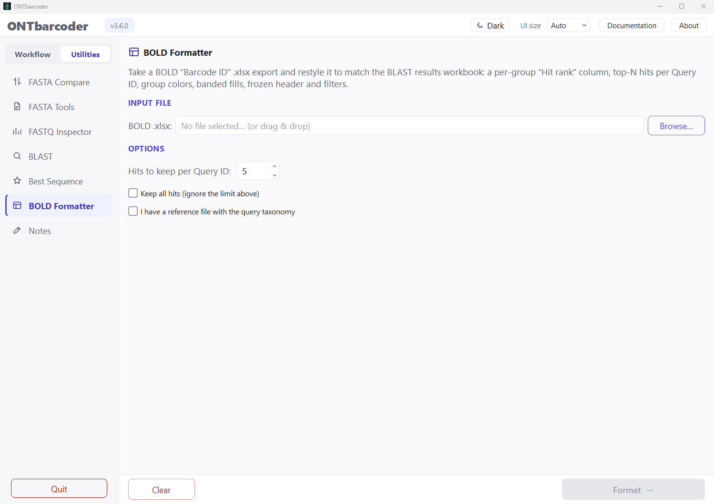
15.1 Input
Drag in (or browse to) a BOLD "Barcode ID" workbook exactly as downloaded from BOLD: a
title row, a header row containing at least a Query ID and an ID%
column, followed by hit rows. The header row is found among the first five rows, so a sheet
saved without the title row works too. Hits do not need to already be sorted or grouped — the
tool groups every row by Query ID and sorts each group by ID%
descending itself, flagging in the log any group it had to re-sort. ID% and
Indels stored as text ("99.5", "99.5%",
"99,5") are converted to numbers, so they sort and filter correctly.
Rows without Query ID. Before formatting, the file is checked for hit rows whose
Query ID cell is empty — left as they are, they would all be pooled into one fake
query. If there are any, a dialog says how many and where (Excel row numbers) and offers to
Rename them — each block of consecutive such rows becomes its own query,
No_query_ID_01, No_query_ID_02… — or to Remove them. The
choice is recorded in the log.
15.2 Options
| Option | Description |
|---|---|
| Hits to keep per Query ID | Caps how many of each query's best hits are kept in the output, same idea as the "Hits per sequence" setting in BLAST. Default 5. |
| Keep all hits | Ignores the limit above and keeps every hit of every query. |
15.3 Output and colour coding
The formatted copy is written as <input name>_formatted.xlsx to the
chosen output folder — automatic (output/ont-barcoder_<timestamp>_bold_format/)
or a manually picked one, the same choice offered by the other export tools. The first hit of
each query is shown in bold, and a heavier top border separates one query's block of hits from
the next. Columns are coloured by role, exactly as in the BLAST workbook: navy for the
identifiers (Hit rank, Query ID), teal for the BOLD match
metrics (PID [BIN], Indels, ID%), and burnt-orange
for the taxonomy columns (Phylum … Species).
16. Utility — Notes
A lightweight, file-based Markdown notebook built into the app — a place to keep run-specific observations, protocols or lab notes without leaving ONTbarcoder. Open it from the Notes item in the Utilities tab of the sidebar.
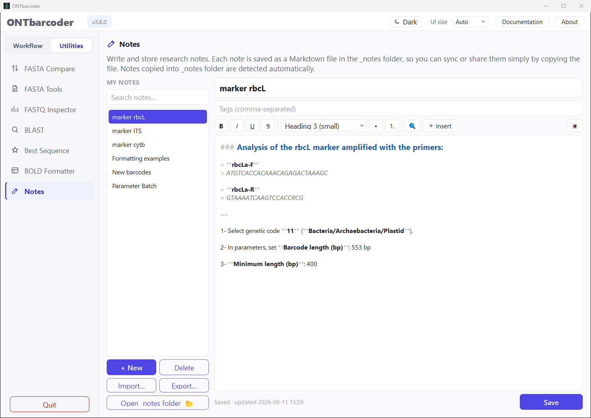
Storage
Each note is a plain .md file stored in a _notes/ folder next
to the executable — created automatically the first time you open the panel. Because
notes are ordinary text files:
- A colleague can drop a
.md/.txt/.markdownfile straight into_notes/and it appears in the list next time the panel is opened — no import step required. - Notes may start with a
---frontmatter block recording title, created/ updated timestamps and tags. - Inserted images are copied into
_notes/_assets/so they travel with the note if you copy the folder elsewhere.
Editing
| Feature | Description |
|---|---|
| Formatting toolbar | Bold / italic / underline / strikethrough, a heading-level selector (Normal/H1/H2/H3), bulleted and numbered lists, and an "＋ Insert" menu for links, images, inline code, code blocks, blockquotes, checklist items, horizontal rules and tables. |
| Live syntax highlighting | Markdown is colour-highlighted as you type. |
| Smart list continuation | Pressing Enter inside a list, checklist or blockquote continues the same marker on the next line. |
| Find & replace | Ctrl+F opens a Find/Replace/Replace-All bar. |
| Preview toggle | The 👁 button switches between the raw Markdown source and a rendered, read-only preview. |
Managing notes
- + New creates a timestamp-named note; once you give it a title and save, the file is renamed to a slug of that title (only for still-untitled notes, so imported/shared notes keep their original filename).
- Delete removes the selected note. Import… / Export… copy note
files in or out of
_notes/for sharing between computers. - Open
_notesfolder 📂 opens the storage folder directly in the file explorer. - Saving is manual (a Save button); the status label shows "● Unsaved changes" or "Saved · updated …".
- Use the search box above the note list to filter by title, tag or content.
17. Utility — Parameter Sweep Optional Conventional only
Runs the currently loaded dataset once per combination of a small parameter grid — e.g. several Main consensus calling frequency / Min. secondary variant fraction / Variant tolerance values — instead of changing them by hand in Parameters and pressing Run again each time. It sits in the sidebar right below Parameters, shown in italics and locked until a dataset is loaded, to signal that it is optional rather than a required step of the workflow. Not available in Real-Time mode.
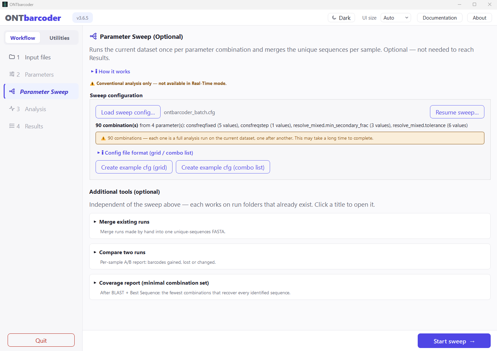
17.1 The .cfg grid file
A batch is defined by a plain-text file: one parameter per line, values separated by
commas, # for comments. Only the parameters listed are overridden —
on top of whatever is currently set in the Parameters panel — so a sweep of 3
parameters only needs 3 lines, not a copy of every setting:
consfreqfixed = 0.30, 0.35, 0.40, 0.45, 0.50 resolve_mixed.min_secondary_frac = 20, 15, 10 resolve_mixed.tolerance = 10, 9, 8, 7, 6, 5
Click Create example cfg (grid) in the panel to save a copy of
_profiles/ontbarcoder_batch.cfg (the save dialog opens in _profiles/
as my_batch.cfg, so the shipped template is never overwritten; Load batch
config… opens there too) — a fully commented template listing
every sweepable parameter with its default, valid range and an example value
list, ready to uncomment and edit. Percent fields (Min. secondary variant
fraction, Variant tolerance) are written on the same 0–100 scale as their
GUI spinboxes, not as a 0–1 fraction.
17.1b Explicit combination list (instead of a grid)
A grid file is a Cartesian product: every value of every key gets crossed with
every value of every other key. That's the wrong shape once specific combinations
have already been picked out of a previous sweep — e.g. the run numbers a
coverage analysis (_utilities/batch_coverage_report.py, §17.6)
found sufficient to reproduce a given result. Re-listing each of those parameters'
distinct values in a grid file would regenerate the full product again, not just the
combinations wanted.
For this case, a .cfg can instead list combinations explicitly:
one full combination per line, as key=value, key=value, ... — the same
shape already used for the Parameters column of
batch_run_summary.tsv (§17.4) and by combo_label()
internally, so a row from a previous run's summary can be pasted in directly. The
file's first non-blank line must be exactly # combos (case-insensitive)
— this is what tells it apart from a grid file:
# combos consfreqfixed=0.50, resolve_mixed.min_secondary_frac=20, resolve_mixed.tolerance=6 consfreqfixed=0.35, resolve_mixed.min_secondary_frac=10, resolve_mixed.tolerance=6 consfreqfixed=0.30, resolve_mixed.min_secondary_frac=15, resolve_mixed.tolerance=5
Each key/value is validated exactly as in a grid file (unknown keys and
out-of-range values are rejected before anything runs), and everything downstream —
run numbering, batch_run_summary.tsv, the deduplicated FASTA — works
the same regardless of which shape produced the combinations. sweep_config.log
records the combination list directly instead of a per-key value list in this case.
Click Create example cfg (combo list) in the panel to write out
_profiles/ontbarcoder_batch_combos.cfg — kept as a separate file from the
grid template above rather than a second section inside it, since the two shapes are
mutually exclusive per batch and mixing both examples in one file invites copying the
wrong block by accident. Its example combinations are illustrative only, ready to
replace with whichever ones you actually want to re-run — e.g. the run numbers a
coverage analysis (§17.6) singled out from a previous grid sweep.
17.2 Validation
The file is checked as soon as it is loaded — before anything runs:
- Every key must be a recognised parameter name (a typo is rejected immediately, naming the offending line) and every value must fall inside that parameter's valid range, the same bounds enforced by its GUI spinbox.
- Non-Coding marker (
non_coi) cannot be swept: it decides the genetic code and which phases exist, so set it in the Parameters panel — the batch inherits whatever is checked there. - Listing any
resolve_mixed.*key (secondary variant fraction, tolerance) turns Detect intra-sample sequence variants (§6.1) on for the whole batch, even if the Parameters checkbox is unchecked — otherwise every combination would be identical. This is logged in the panel so it is never a silent surprise. - A batch of more than 15 combinations shows a warning in the panel (each one is a full analysis); above 200 the app asks for confirmation before starting anything.
17.3 Running a batch
- Load a dataset and set every parameter you want to keep fixed as usual, in Input files and Parameters.
- Open Parameter Sweep, click Load sweep config… and pick the
.cfg. The panel shows the combination count before you commit. - Click Start sweep. Each combination runs as an ordinary
ont-barcoder_*_convfolder underoutput/, with its own self-documenting log recording the exact parameters used — indistinguishable from a manual run except for how it was launched. - Two progress bars track it: combinations completed (
i/N) and the combination currently running (its own phase-by-phase progress, 0–100 %). The latter reflects steady progress within whichever phase is active — including phase 2a's own coverage levels — independently of the overalli/Nbar, so a run with several coverage levels no longer advances unevenly (fast through small levels, slow through the first, most expensive one) or looks stuck at 100 % a level early. The overall bar also shows the elapsed time and, once a combination has finished, an estimate of the time left (ETA). The bars stay pinned above the log, which can be made taller by dragging the divider above it.
The .cfg is read again when Start sweep is pressed; if it was edited
since loading and now expands to a different number of combinations, the panel asks before
starting.
17.3b Phase 1 reuse across combinations
Only 7 parameters affect what Phase 1 (demultiplexing) actually does:
minlen, explen, demlen, minq,
tagmm, primersearchlen, primermismatch. Every other
sweepable parameter (consensus calling frequency, intra-sample variant detection, …) only
affects phase 2a/2b/3. Since a sweep typically varies only consensus-calling parameters —
exactly the case in the worked example above — most combinations would otherwise
re-demultiplex the same reads from scratch for no reason.
When a combination agrees with the previous one on all 7 of those parameters,
Parameter Sweep skips demultiplexing entirely and reuses its output instead: the prior
combination's demultiplexed/ folder is hard-linked in (falling back to a copy
when hard-linking isn't possible), or unpacked from
intermediate_files/demultiplexed.zip if the prior run had already archived it.
Any failure in this reuse path logs a warning and falls back to a normal Phase 1 run for
that combination rather than stalling the batch. A sweep that never lists any of the 7
demultiplex parameters reuses Phase 1 for every combination after the first, since they
then never change from the value fixed in the Parameters panel — the common case, and
exactly what the worked example above does. A sweep that mixes demultiplex parameters
with consensus-calling ones benefits from listing the demultiplex parameters
first in the grid .cfg: expand_grid() varies the
last-listed key fastest (standard Cartesian-product order), so putting
consensus-calling parameters last keeps the demultiplex parameters unchanged across the
longest possible run of consecutive combinations.
Each combination's log line shows its own wall-clock start time and the batch's running elapsed time, and its "done" line reports how long that specific combination took — useful for spotting which combinations were demultiplexed fresh (slower) versus reused (faster) at a glance.
17.4 Output — per-run summary and deduplicated FASTA
Once every combination finishes (or the batch is stopped), three files are written to
the batch's own output folder (output/ont-barcoder_<timestamp>_batch/).
Runs are identified by a short run number (1, 2, 3…, in the order they ran) rather
than by their timestamped folder name — the same number is used consistently across all
three files, and keeps things readable even for a sweep of 40+ combinations:
batch_run_summary.tsv— one row per analysis: run number, output folder, the exact parameters overridden for that combination, and how many sequences its ownconsensus_filtered.faproduced (N_consensus_filtered). The quickest way to see which combinations yielded more/fewer barcodes without opening each run folder.unique_consensus_filtered.fasta— theconsensus_filtered.faof every completed run merged into one FASTA. A sample whose sequence is identical in every run that produced it appears once, header untouched. A sample with different sequences across runs gets one entry per distinct variant, header suffixed with the run number that produced it (;run3).unique_secondary_variants.fasta— only for runs with Detect intra-sample sequence variants enabled: thesecondary_variants.fa(raw + corrected) of those runs merged the same way, grouping every variant of a host sample together. Per-sample breakdown inbatch_variants_dedup_report.tsv.batch_dedup_report.tsv— one row per sample:N_variants(how many distinct sequences it had across the sweep),N_runs_present/N_runs_total(e.g.18and40, as two plain numbers rather than18/40) andRuns— the run numbers it appeared in, written as compressed ranges (e.g.1..12,15,20..24) so the column stays short even when a sample is present in most runs of a large sweep. Both the two-column count and the..range separator (instead of/or-) are deliberate: Excel reads a plain-- or/-separated value like1-9or9/9back as a date when the.tsvis opened directly. Cross-reference a run number againstbatch_run_summary.tsvfor its parameters.
Merge existing runs. The same merge also works on analyses run by hand, without a
batch: in the Merge existing runs box of the Parameter Sweep panel, add two or more
run folders (button or drag & drop; a folder holding several runs, such as
output/, adds every run inside it) and click Merge runs. The results go to
a new output/ont-barcoder_<timestamp>_merge folder, with
merge_run_summary.tsv numbering the runs as the ;run<N> tags do.
Runs marked [variants] (a non-empty secondary_variants.fa) also feed
unique_secondary_variants.fasta.
BLAST and Best Sequence (§13, §14) stay manual steps, run afterwards on that merged FASTA — remote BLAST is rate-limited and can queue for 10–40 minutes per batch, which makes it impractical to run once per combination automatically. Best Sequence already picks the best-scoring variant per sample when a sample carries more than one candidate, exactly the case a batch with variants produces.
17.5 Stopping a batch
Stopping is handled the same way no matter how it happens — every path still writes the summary and the deduplicated FASTA from whatever combinations completed:
- Stop lets the combination currently running finish cleanly, then stops before starting the next one.
- Stop now (after a confirmation) aborts the combination currently running right away.
- Stopping from the Analysis panel's own Stop button, resetting the analysis, or closing the app mid-batch also abort the running combination — none of them leave the batch stuck waiting on one that was just killed.
A combination cut off mid-run is left out of batch_run_summary.tsv and of the
merge (it would otherwise count as a run in N_runs_total), and the log says so.
The last log line reads Batch stopped — N/M combination(s) completed rather than
Batch completed.
17.5b Resuming an interrupted batch
Every batch folder keeps what is needed to pick it up again: a copy of its
.cfg (batch_config.cfg), the dataset and the Parameters-panel values
it was started with (batch_state.json), and batch_progress.tsv,
which gains one line as each combination completes — so it survives Stop, closing the
app, a crash or a power cut. With the same dataset loaded, click Resume sweep… (next
to Load sweep config…) and pick the ont-barcoder_*_batch folder:
- only the combinations not yet completed are run; one that was cut off mid-run is run again from scratch;
- the saved
.cfgand parameters are used, not whatever the Parameters panel holds now; - when it finishes, the summary and merged FASTA in that same folder cover the old and new runs together, in combination order.
A different dataset loaded than the one recorded asks for confirmation first; a
.cfg that no longer expands to the same number of combinations is refused; a
completed run whose folder was deleted is simply run again. Batches started before version
3.5b have no saved state and cannot be resumed.
17.6 Coverage report — which combinations were actually needed
After BLAST and Best Sequence (§13, §14)
have turned the batch's merged FASTA into a taxonomically-identified best-sequence set, a
natural question is whether the sweep was worth it: does any single combination already
reproduce every identified sequence, or were several combinations each needed to contribute
their own share? The Coverage report (minimal combination set) section of the Parameter
Sweep panel answers this: pick the sweep folder and the Best Sequence output folder, then
click Create coverage report. A Merge existing runs folder (…_merge)
works too: the minimal set is then named by run folder and no .cfg is written,
since those runs record no parameters. The same analysis runs from a command line:
python _utilities/batch_coverage_report.py \
--batch-dir "output/ont-barcoder_<timestamp>_batch" \
--bestseq-dir "output/ont-barcoder_<timestamp>_bestseq"
It re-derives, by direct sequence comparison against every run folder's own
consensus_filtered.fa and secondary_variants.fa (a winner can
be a secondary variant, whose _var number may differ from run to run), exactly
which run combinations reproduce each taxonomically-identified sample's winning sequence —
rather than trusting the
;run<N> tag in unique_consensus_filtered.fasta, which only
records the first run that produced a given variant, not every run that did. It then
computes the smallest set of combinations that together cover every identified sequence
reproduced by at least one run (an exact search seeded by the greedy solution; if it exceeds
15 s the smallest set found is kept and the Summary says it may not be minimal), and writes parameter_batch_coverage_report.xlsx (by
default, into the _bestseq folder) with four sheets:
- Summary — combinations tested, sequences identified, size of the minimal set, best/worst single combination, and any identified sample whose sequence could not be reproduced by any run folder on disk (a sign that folder was re-run after the batch's dedup/BLAST steps).
- Minimal_run_set — the combinations in the minimal set, one row each, with their parameters broken into columns, how many new sequences each one added, and the running total.
- Per_sample_detail — every identified sample, its taxonomy match, in how many of the swept combinations its winning sequence recurs, and whether/which combination in the minimal set covers it.
- All_runs_coverage — every combination in the sweep with its parameters and how many identified sequences it reproduces on its own, for context.
Next to the workbook it writes minimal_run_set.cfg: the minimal set as a
# combos config (§17.1b), one combination per line with its contribution as a
comment. The panel offers to load it right away as the batch config, so the next dataset can
be run with just those combinations. Parameters not listed in it take their value from the
Parameters panel — use the same base settings as the original batch (recorded in its
batch_state.json).
Useful flags: --fasta-name to compare a different per-run FASTA than
consensus_filtered.fa; --output-root if the run folders were moved
out from under output/; --output to pick the report's path. Both
--batch-dir and --bestseq-dir auto-detect the most recent matching
files inside the folders given, so exact filenames/timestamps don't need to be typed out.
17.7 Compare two runs
A per-sample A/B report of two analyses of the same dataset — two combinations of a batch,
or a run made with another version or by hand. The Compare two runs box of the panel:
Load batch… lists that batch's combinations (run1 (…parameters…), …) and
Add run folder… adds any other analysis folder; choose Run A and Run B and
click Compare runs. For every sample it reports whether each run produced a
QC-compliant (consensus_no_errors.fa) and a filtered
(consensus_filtered.fa) barcode and whether the sequence is the same, plus the
number of secondary variants and their highest divergence, and classifies the change
(barcode only in A/B, barcode differs, variants only in A/B,
variant count differs). The summary goes to the panel log and the per-sample detail to
compare_runs_<A>_vs_<B>.tsv — in the batch folder, or in run A's
folder (List every sample includes the unchanged ones). Unlike
FASTA Compare (§10), which aligns the sequences of one file per
run, this looks at the whole result of each analysis. Same logic as the command-line
_utilities/compare_runs_report.py.
18. Performance & threads
The heavy work is many short alignment subprocesses (disttbfast.exe, each
forced to a single internal thread). Optimal concurrency therefore tracks the number of
physical cores, not logical (hyperthreaded) processors.
- The default thread count equals the detected physical core count, and the analysis is internally capped there.
- Setting more threads than physical cores oversubscribes the CPU and runs slower (e.g. 20 workers on 16 physical / 24 logical cores is worse than 12).
- Each alignment runs in an isolated temporary directory on the system TEMP drive, which keeps results deterministic and avoids disk contention.
19. Troubleshooting
| Symptom | Cause & fix |
|---|---|
| App fails to write output / profiles | The program is in a read-only location. Move it to a writable folder (Desktop, Documents). See §2.1. |
| Consensus phases produce nothing / errors about disttbfast | The _mafftfiles/ folder is missing or not next to the executable.
Restore the original folder layout. |
| "Output file locked" during BLAST | The result .tsv/.xlsx is open in Excel. Close it; the
writer resumes automatically. |
| BLAST: "NCBI did not accept the request (connection error: [Errno 11001] getaddrinfo failed)" | The computer could not look up NCBI's server name: a DNS problem of the network,
not of the program (it happens with any version). Often the router's DNS refuses
some names for a while and then recovers. Retry later, restart the router, or set
a public DNS on the network adapter (e.g. 8.8.8.8 and
1.1.1.1); on an institutional network ask IT to allow
blast.ncbi.nlm.nih.gov and eutils.ncbi.nlm.nih.gov.
Meanwhile the BLAST web results tab (§13.2) still works. |
| BLAST waits a long time on the same RID | NCBI's queue is busy, or the search is stuck there. Press Stop, then Resume run…: the batch is submitted again as a new search and the rest of the run continues in the same table. Fewer sequences per search (Manual mode) usually return sooner. See §13.1 — Stopping and resuming a run. |
| Few reads pass demultiplexing | Check tag length consistency, primer sequences, and the Minimum length / length-window settings against your amplicon. Increase Primer/Tag mismatches allowed if your data are noisier. |
Many specimens in Remaining.fa |
Coverage may be insufficient — add lower coverage levels to the Phase 2a list, or (Non-coding) use the descending preset. Verify you selected the correct genetic code for your marker. |
| "Incomplete genetic codes" dialog blocks Start analysis | The demultiplexing CSV has a trailing genetic-code column for some rows but not all. Add a code (0–33) to every row, or remove the column entirely to use the global Genetic code from Parameters → General. See §4.2. |
| "Dorado requires an NVIDIA GPU with CUDA. Analysis aborted." | No CUDA-capable GPU was detected. Basecall with MinKNOW (or a separate Dorado install) instead and use the MinKNOW performing basecalling option. See §5.2. |
Specimens land in secondary_variants.fa unexpectedly |
Enable/disable or tune Detect intra-sample sequence variants (§6.1) — a
low Min. secondary variant fraction or high Variant tolerance makes
the detector more sensitive to minor haplotypes/noise. Check the Intra-sample
variants sheet in runsummary.xlsx for the per-sample breakdown,
and §6.1 — many-variant specimens if several
variants are expected. |
| A specimen known to be mixed is reported as not mixed | Most often the detection ceiling: with Min. secondary variant fraction at the default 20%, six or more co-abundant variants each fall below the bar and are all demoted to noise. Lower it to 10%, drop Variant tolerance to 5%, and make sure the Coverage list reaches high enough values (a cluster also needs ≥ 3 reads in absolute terms). See §6.1 — many-variant specimens. |
| "The analysis stopped because of an error" | A background step of the pipeline failed (e.g. a file locked by an antivirus or
OneDrive, or a malformed input). The error is shown in red in the log, the run is
stopped cleanly and partial results are saved; the full traceback goes to
ONTbarcoder_crash.log in your home folder. |
| Demultiplexing file: "line N … needs at least 3 columns" | That row has a sample name but is missing its tags. Fix or delete the row in the CSV. See §4.2. |
| Application crashes | A crash log is written to ONTbarcoder_crash.log in your home folder
(%USERPROFILE%). Include it when reporting issues. |
20. Credits & citation
Original software: Amrita Srivathsan, V. Feng, D. Suárez, B. Emerson & R. Meier.
Version 3 development: Eduardo Tovar Luque · Instituto Humboldt (2026).
If you use ONTbarcoder, please cite:
Srivathsan et al. (2024). ONTbarcoder 2.0: rapid species discovery and identification with real-time barcoding facilitated by Oxford Nanopore R10.4. Cladistics, 40: 192–203. https://doi.org/10.1111/cla.12566
Project repository: github.com/asrivathsan/ONTbarcoder